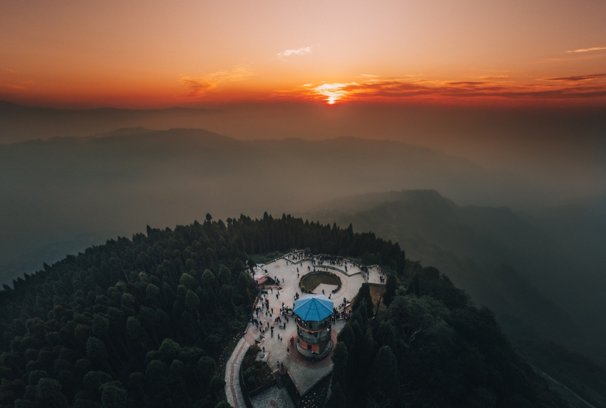
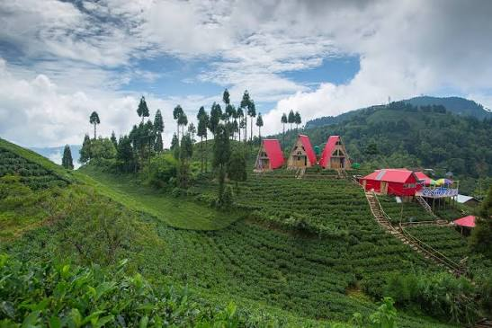
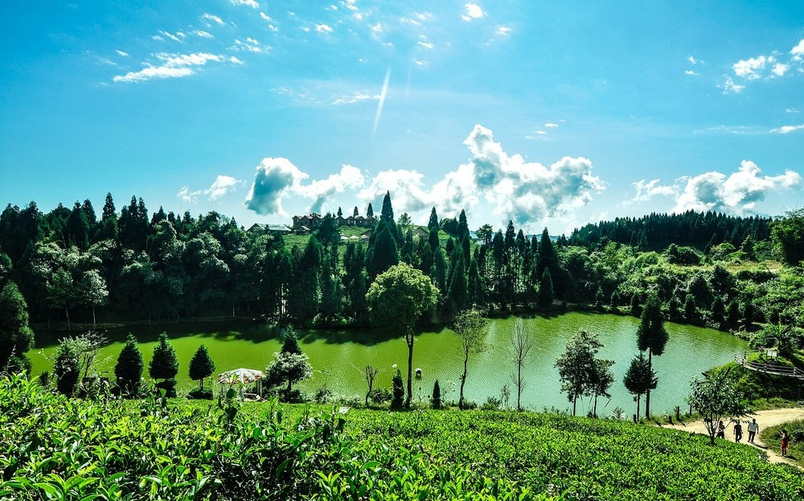
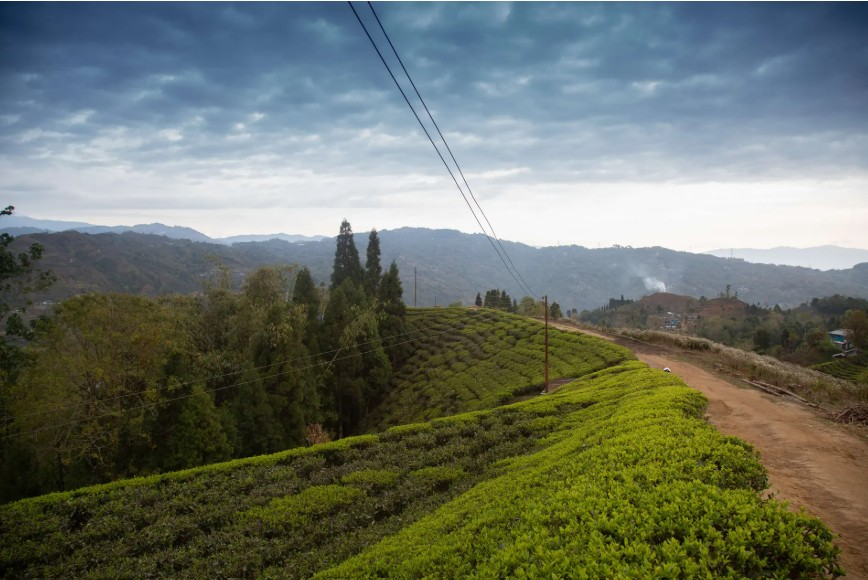
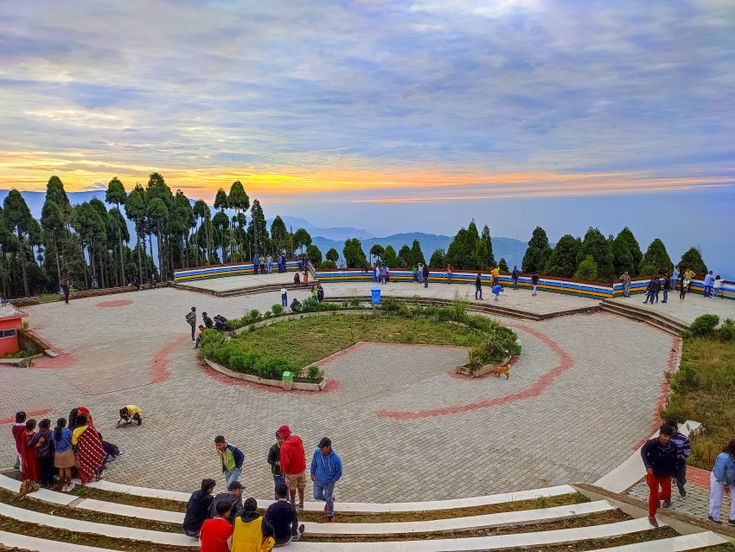
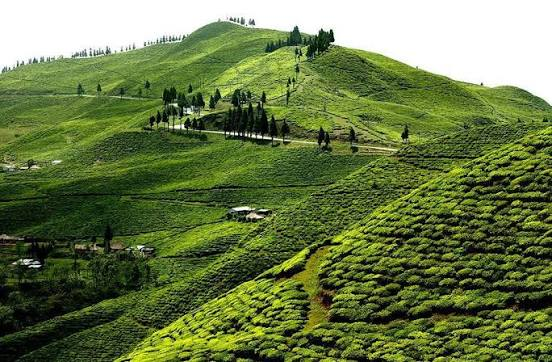
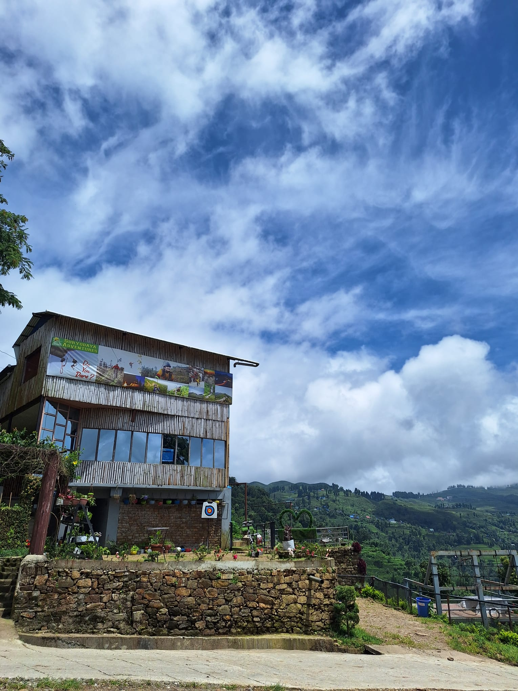
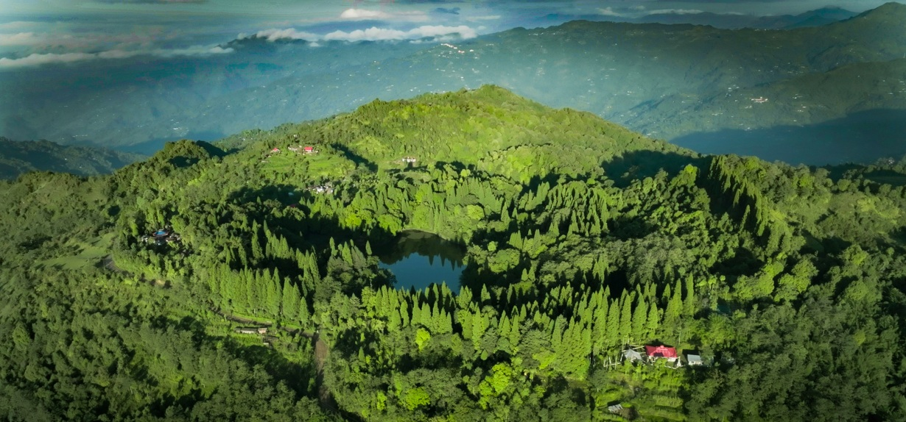

The first hill in Nepal to catch the morning sun — a sunrise viewpoint above a sea of clouds, framed by tea gardens, forest trails and the eastern Himalaya.
At roughly 2,328 m, Shree Antu Danda sits directly east-facing among the rolling tea hills of Ilam, which is why it's known as the first place in Nepal touched by the sun's rays each morning. Beyond the famous view from Antu View Tower, the hill rewards a longer stay: tea gardens beyond the main trail, a quiet walk down to Antu Pokhari, a forest hike to Gufa Patal, and small farming villages that make up everyday life here. It's a short drive from Kanyam and Suryodaya Adventures, so the two are easy to combine in a single trip.

Visitors climb to the view tower before dawn and wait, wrapped in blankets with a hot glass of milk tea, as the sky slowly turns gold. On a clear morning the view stretches from a valley full of drifting cloud all the way to Kanchenjunga, Kumbhakarna and the layered ridges of the eastern Himalaya — a view few sunrise points in Nepal can match.
Once the sunrise crowd thins out, narrow paths lead through rows of tea bushes covering the surrounding slopes. The walking is gentle, making it an easy add-on rather than a strenuous hike, and it's a good way to see how the hillside's green character is shaped by generations of tea farming. Tea-picking visits and small factory tours — where you can see leaves selected, dried, rolled, sorted and packed — generally run from mid-April to mid-November.


A short walk from most homestays brings you to Antu Pokhari, a quiet lake ringed by trees and cottages that makes a relaxed contrast to the early sunrise climb. Paddle boating across the water is the main draw, with mountain views from the middle of the pond for those who want to linger. It's an easy stop for families, couples and solo travellers alike, and a good place to slow the pace for an hour before moving on.
For a longer outing, the trail to Gufa Patal View Point winds through a Tamang village, pine forest and streams before reaching a cave once used for meditation by Tamang ancestors. The round trip takes about three hours depending on pace and starting point, and on a clear day the upper viewpoint opens onto a panoramic view of Kanchenjunga. A local guide is worth arranging for the forest sections and adds context to the villages and cave along the way.


Antu View Tower is the best-known photo spot, but good frames appear all over the hill. Tea rows curve along the slopes, mist settles between farms, and wooden village houses sit beside flower gardens — all within easy reach of the main trail.
The 20 minutes around sunrise give the richest colour across the valley.
Layered hills in the distance create natural depth in every frame.
On the right morning, valleys fill with cloud beneath a clear ridge line.

Kanyam Tea Garden
Suryodaya Adventures
Mai PokhariMai Pokhari is a forest lake with religious and environmental importance. Fir, pine, juniper, birch, and other plants surround its nine-cornered shape. It lies about 13 km north of Ilam Bazaar rather than beside Shree Antu — worth adding when you have an extra day for a wider Ilam trip, rather than trying to fit it into a rushed overnight visit.
| Topic | Tip |
|---|---|
| Best time to visit | September–November and March–May for the clearest sunrise and mountain views; check local weather the night before. |
| Getting there | Fly into Bhadrapur or travel by road through Fikkal and Kanyam; arriving the evening before makes for an easier early start. |
| Where to stay | Hotels, cottages and community homestays operate near the viewpoint for early risers. |
| What to bring | Warm layers, a flashlight or phone torch, and a camera with a charged battery. |
| Combine with | Pair sunrise at Shree Antu with a full day of activities and lunch at Suryodaya Adventures near Kanyam. |
Start your morning with the Himalayas, then spend your afternoon ziplining, climbing and camping just down the road.